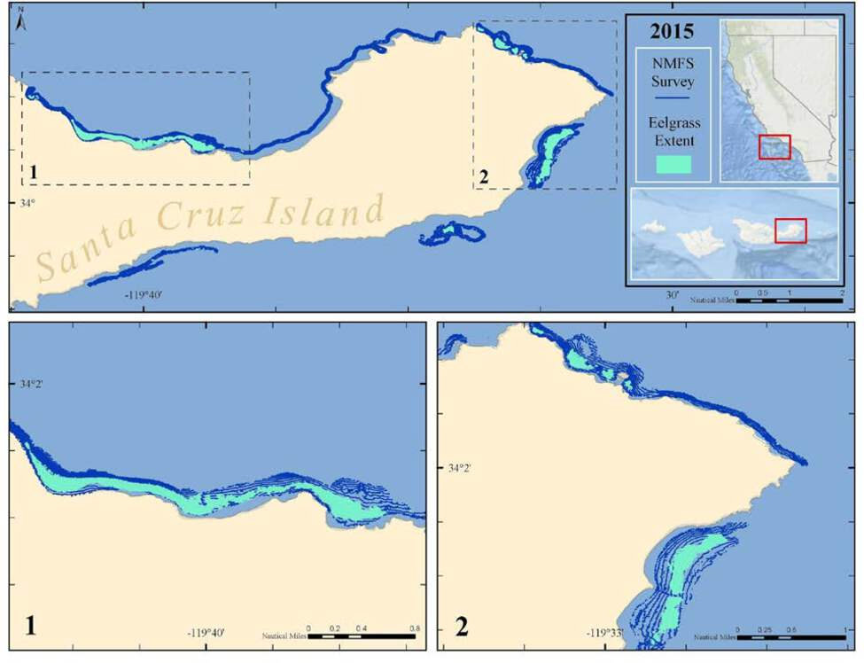
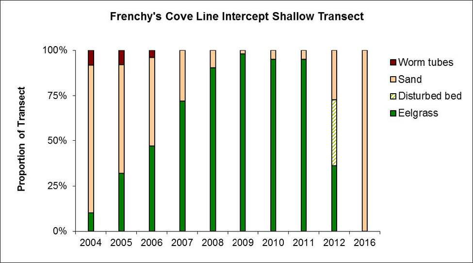

Just like grasses found on land, eelgrass is a true grass! Known for its long, wide blades, eelgrass forms extensive meadows on shallow, sandybottoms. These meadows serve as a vital nursery ground for many marine organisms, and through photosynthesis, can capture a lot of atmospheric carbon dioxide!
Map of eelgrass beds

A map showing eelgrass bed locations around the Northern Channel Islands. Data source: NMFS, UCSB, and CINMS; Map credit: M. Cajandig/NOAA.
Click for Details
CINMS eelgrass bed locations in the map above are a compilation from UCSB, NMFS, and CINMS data. Surveys for eelgrass occurred at different times and the bed persistence is unknown at many locations. UCSB data come from transects performed by UCSB researchers while the NMFS data comes from sidescan sonar surveys along the coastline. For more information, consult Figure App.E.10.22 in the CINMS 2016 Condition Report.Eelgrass extent Anacapa Island

A map showing eelgrass beds mapped by diver surveys on Anacapa Island in 2009 (light blue) and 2012 (dark red). Data source: J. Altstatt/ UCSB and CINMS; Map credit: M. Cajandig/NOAA.
Click for Details
Eelgrass bed extent from diver surveys at Anacapa Island in 2009 (light blue) and 2012 (dark red). Overall, bed extent appears to be declining at Anacapa between 2009 and 2012, with the eastern bed being extirpated. Trap fishing, anchoring, and seafloor disturbance are thought to contribute to declines in bed extent and shoot density, with eelgrass beds inside the marine reserve having higher shoot density than those in areas with less protection. For more information, consult Figure App.E.10.24 in the CINMS 2016 Condition Report.Eelgrass extent Santa Cruz Island

A map showing eelgrass beds on Santa Cruz Island from a 2015 survey using sidescan sonar. Data source: NMFS; Map credit: M. Cajandig/NOAA.
Click for Details
National Marine Fisheries Service surveys in 2015 for eelgrass using interferometric sidescan sonar to map bed extent are shown. Dark blue represents bathylines generated from the sidescan data and area surveyed. Turquoise areas represents eelgrass bed extent generated from sidescan data. Eelgrass beds in these areas are thought to have persisted for long periods of time and appear to be relatively stable; however, surveys on the eelgrass health and shoot density have not been conducted. For more information, consult Figure App.E.10.25 in the CINMS 2016 Condition Report.Eelgrass cover Frenchy’s Cove

A figure showing the amount of eelgrass in Frenchy’s Cove, Anacapa Island, from 2004 - 2016. Figure credit: J. Altstatt/UCSB and NOAA.